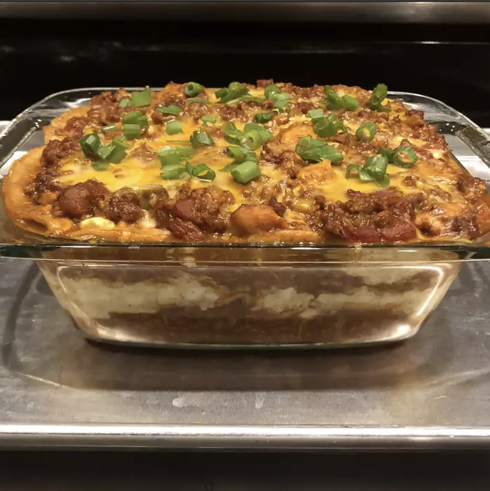

Recipe for Lasagna

The following lists the inggredients and steps required to make an Irish Lasagna.
Ingredients
- 1 (14.5 ounce) can diced tomatoes with lime juice and cilantro
- 1 (16 ounce) package small-curd cottage cheese
- 1 (28 ounce) can enchilada sauce
Steps
- Heat oil in a large pot over medium heat. Add onion and garlic; cook and stir until onion is translucent, about 5 minutes. Stir in ground turkey; cook until no longer pink, about 5 minutes. Drain excess grease!
- Stir enchilada sauce and diced tomatoes into the pot. Simmer until flavors combine, about 20 minutes. Remove from heat.
- Preheat the oven to 375 degrees F (190 degrees C).